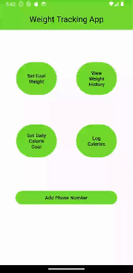

Weight Tracking
Android Application
Overview
This application was created using Android Studio, utilizing Java, XML, and SQLite. There is fully functional login service and screens for the user to input their weight and daily caloric goals. There is a screen to display the user's previous weight records, and another screen for the user to see their caloric intake for today, or any date of their choice. In the screens showing the weight or calorie records, they can access screens to log their weight and foods they've eaten.
Getting Started
Logging In and Account Creation
The Log In screen utilizes text fields and buttons for user interaction. The password field uses Android's textPassword function to hide the text for security. When both fields have text present the Log In and Create Account buttons become accessible. When the Log In button is pressed, the database is queried to find the matching account. If successful, the accounts ID is returned and the user is logged in. If unsuccessful, the user is told so. When the Create Account button is pressed, the database is queried for an existing account. If no such account exists, the account is created and the user is logged in. If the account does exist, the user is told to log in instead.
Setting Goals

Using a single text field and button, the user is able to set their Goal Weight.
The text field is configured to only allow numbers with decimals. Upon entering text,
the submit button is enabled. When pressed, a query saves the user's goal weight to
the database.
There is also a screen for setting a daily caloric goal. The Calorie Goal Screen has a text field that is formatted for integers,
and the Submit button is only enabled with text present. When submitted, the goal is saved to the database.
Making records
Logging Your Weight
The user can log their weight by accessing the Weight History page. On the On the Weight History page, the user's goal weight is displayed, as well as a grid showing the user's records, with date and weight visible, as well as buttons to delete or edit each record. Upon clicking Log Weight, the user is brought to a screen to log their weight for the day. The date is already entered proper format, only requiring the user to fill the remaining field with their weight and to hit submit. Once submitted, the record is saved in the database and available to view on the history page. Pressing the delete icon will remove the record from the page, and delete it from the database.
Editing Weight Records
Hitting the Edit Icon will open a dialog for the user to edit the record pressed on. The dialog has two text fields which are automatically filled with the data from the respective record. The user can then edit the text to the correct data. By hitting save, the information is submitted to the database, and the update is attempted. The database will find the original record using the record's original date. Once found, the record will be overwritten using the new data. If successful, the user will get a success message and the dialog will close.
Logging Calories
Upon pressing the Log Calories button, the user will be taken to the Calorie Data screen, which showcases today's food records. Using the database, the user's daily goal and records for today are retrieved. The Goal and Calculation showing the calorie budget, calories consumed, and calories remaining are displayed. Beneath are all of the records of each food logged for today. When the Log Food Item button is pressed, the user is taken to a screen which prompts them for all information needed to calculate the calories. The user is asked for the Food's name, the Carbs, fats, and protein per serving, and the servings consumed. When submitted, the calorie count is calculated, and the food item is saved to the database.
Viewing Days Past
The user can view their records from previous days by pressing "View a Different Day's Records." This button will open a dialog for the user to change the date to the desired date. Once they press save, the screen will repopulate with the desired day's records. The user can then add and delete records, which will apply to the new date only. If the user leaves the screen, the current date will be used, showing today's records. When changing dates, the calculation display is updated as well, reflected the displayed records only. Changing dates allow the user to verify all records are accurate, and they can see how much they are staying on track to reach their goals.
Additional Features
Reward Messages
The application has functionality to prompt the user for text message permissions. If the user accepts, then a button will appear for them to enter their phone number. If they do so, they will be sent a text message congratulating them on acheiving their goal weight when ever such an event happens.